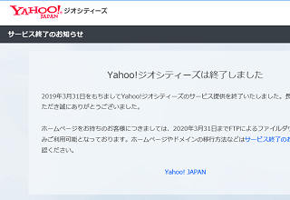

無料ホームページとは？
ホームページを作成するには「ドメイン」と「ホームページスペース」を自分で用意する必要があります。このドメインというのはサイトのURLのことで、ホームページスペースはHTMLやCSSファイルを格納しておくサーバーのスペースになります。
- ドメイン → サイトのURL
- ホームページスペース → ファイルを格納しておく場所
一般的には、このドメイン代とサーバー代で年間2,500円～5,000円程度の費用がかかりますが、FC2ウェブやジオシティーズなどの無料ホームページスペースを利用するとこれらを無料でレンタルして作ることができます。
有名な無料ホームページサービスには以下の会社があります。
- ヤフージオシティーズ
- ＦＣ２ＷＥＢ
- 忍者ホームページ
- インフォシーク
- アット・ニフティ
これら無料ホームページスペースの比較情報についてはこちらをご参照ください。
→ 無料ホームページスペース比較
けれども、無料で利用できる分、広告が表示されたり、利用目的に制限があるなどのデメリットもあります。
■無料ホームページの特徴
- 広告が表示される
- ドメインの所有権は運営会社にある為、サイトの移転や売却の自由がない
- アフィリエイト・商用利用に制限がある
- コンテンツ内容の制限（※情報商材や成人向けなどの制限）
そのため、サークル活動や趣味で楽しむホームページなら十分に機能するとは思いますが、利用するサービス会社の「サブドメイン」や「サブディレクトリ」での作成になるため、企業の会社ホームページなどの用途には向いてません。
会社のホームページやネットショップなどの運営については、無料ホームページではなく、自分で独自ドメインを取得して有料のレンタルサーバーにて作成することをおすすめします。
無料ホームページ会社が運営終了となってしまうリスク
無料ホームページスペースの場合、資金面などの理由で運営会社がサービスの提供を終了してしまうこともあり、そこで作っていたサイトが削除されてしまうリスクがあります。
例えば、運営会社がサービスを終了するとなった場合、たいていは数か月前ぐらいに以下のような告知がされることになります。
「200X年何月何日を持ちまして、無料ホームページサービスの提供を終了することになりました。何月何日以降はサイトが表示されなくなりますので、何卒ご了承ください。」
そして、200X年何月何日になると、URLにアクセスしてもサイトが表示されなくなります。
「404 Not Found ご指定のURLは見つかりませんでした。」
こうなってしまった場合、バックアップしたファイルを元に新しいURLでサイトを作り直したとしても、他のサイトから参照されていたリンクが無効となってしまうため、検索エンジンではヒットしなくなります。
その結果として、アクセス数が大幅に減少してしまい、もしそのサイトで毎月の広告収入があったとすれば、アクセス数の減少でサイト収入も途絶えてしまうことになります。
これは無料ブログサービスやSNSの場合でも同じことがいえますが、URLやサーバースペースを借りて作る場合は「無料レンタルサイト」と呼ばれており、運営会社がサービスの提供を終了するとサイトが消失してしまうリスクがあります。
当ホームページも2009年頃にヤフージオシティーズにて開設してましたが、現在、そのジオシティーズは既にサービスが終了しています。そのため、当ホームページの当初のURLについては既に消失してアクセスできない状態になっています。

ジオシティーズにはお世話になりましたが、もしドメインを取得して移転していなければ、アクセス数が大幅に減少する結果になっていたかもしれません。
無料ホームページで作成する場合は、サービス終了となるリスクがあることを踏まえた上で利用されることをおすすめします。
サイトのURLはドメインを取得した人にしか管理権限がない
一方、自分でドメインを取得してURLさえ確保しておけば、レンタルサーバー会社は世界中に膨大な数があるため、他のサーバー会社で契約をし直して自由にサイトを移転することができます。
たとえ利用しているサーバー会社が運営終了となった場合でも、別のサーバー会社と契約してバックアップファイルをアップロードしなおし、そちらにドメインのURLを設定しなおせば、これまでと全く同じようにサイトが表示されます。
この場合、今までと同じURLを使用することになるため、そのURLへ貼られているリンクも途切れることがなく、検索エンジンでもこれまでと同じようにヒットします。
「ホームページスペース（※サーバー会社）」はいくらでも代替が利きますし、「ホームページファイル」もいくらでも複製が可能ですが、URLとなるドメイン名だけは取得した人にしか管理の権限がないため、一般的にはドメインの取得者がそのサイトの所有者になります。
- ドメイン（URL）：世界にひとつだけのオンリーワン
- ホームページスペース：無数のサーバー会社があり代替が可能
- ホームページファイル：コピーでいくらでも複製が可能
そのような意味で、できるだけ自分でドメインを取得し、レンタルサーバーを契約して作ることを当サイトではお勧めしております。
もし無料ホームページを利用される場合には、このようなメリットとデメリットを押さえた上で作り始めるとよいでしょう。